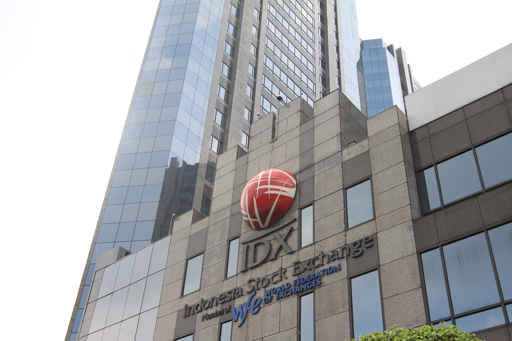

Perusahaan Tercatat
940+Emiten saham +32 IPO baru tahun berjalanIHSG7,328.45▲ +0.58%
Volume Transaksi18.42 Miliar Lembar
Nilai TransaksiRp 11.24 Triliun
schedule Terakhir diperbarui: 15:45 WIB (Pasar Tutup)
account_balance Self-Regulatory Organization (SRO) Diawasi OJK
PROFIL KORPORASI & LEMBAGA PASAR MODAL
Mengenal PT Bursa Efek Indonesia (BEI): Pilar Utama Pasar Modal
Membangun pasar modal Indonesia yang teratur, wajar, dan efisien melalui infrastruktur perdagangan yang andal, transparan, serta berintegritas.
verified ISO 27001:2013 Certifiedgavel UU No. 8 Tahun 1995 Pasar Modal

trending_up
Pasar Modal IndonesiaTerus tumbuh dan bertransformasi
IDX
INDONESIA STOCK EXCHANGE
INDONESIA STOCK EXCHANGE
RINGKASAN SKALA PASAR
Pasar Modal Indonesia
Kapitalisasi Pasar
Rp 11.850TMarket cap · ~54% PDB IndonesiaInvestor Pasar Modal
14.2 Juta+Single Investor ID (SID)Jaringan Edukasi
34 Kantor900+ Galeri Investasi di seluruh provinsiDATA & PERFORMA PASAR
Tren Indeks Harga Saham Gabungan (IHSG)
Ilustrasi pergerakan indeks untuk menampilkan gambaran data pasar modal.
IHSG7,328.45
▲ +0.58% Hari ini
09:0011:0013:0015:45
* Angka dan grafik pada halaman ini merupakan data ilustrasi, bukan data perdagangan real-time.
STRUKTUR ARSITEKTUR PASAR MODAL
Tiga Pilar Self-Regulatory Organization (SRO)
Ketiga lembaga menjalankan fungsi berbeda yang saling melengkapi untuk menjaga ekosistem pasar modal Indonesia.
PT Bursa Efek Indonesia (BEI)
Menyediakan sistem dan sarana perdagangan efek yang teratur, wajar, dan efisien.
- Sistem perdagangan JATS-NextG
- Pengawasan kepatuhan emiten & anggota bursa
- Penyelenggara Bursa Karbon (IDXCarbon)
PT Kliring Penjaminan Efek Indonesia
Memastikan penyelesaian transaksi bursa berjalan dengan mekanisme kliring dan penjaminan.
- Kliring transaksi bursa T+2
- Penjaminan penyelesaian transaksi efek
- Pengelolaan dana cadangan jaminan
PT Kustodian Sentral Efek Indonesia
Menyediakan layanan penyimpanan dan penyelesaian efek secara terpusat.
- Layanan AKSes KSEI
- Sistem C-BEST & eASY.KSEI
- Penyelesaian dana melalui bank pembayaran
LINTAS WAKTU INSTITUSI
Tonggak Sejarah & Transformasi Bursa Indonesia
Perjalanan panjang dalam membangun infrastruktur pasar modal yang modern.
Pengaktifan Kembali Pasar Modal
Pasar modal Indonesia diaktifkan kembali dengan emiten pertama PT Semen Cibinong (SMCB).
Penggabungan Bursa (Merger BEJ & BES)
Bursa Efek Jakarta dan Bursa Efek Surabaya bersatu membentuk PT Bursa Efek Indonesia.
Era Inklusi Digital & Ritel
Perluasan literasi melalui kampanye Yuk Nabung Saham dan modernisasi layanan pasar modal.
Bursa Karbon (IDXCarbon)
Perdagangan unit karbon resmi menjadi bagian dari inisiatif pasar modal berkelanjutan.
FUNGSI INSTITUSIONAL
Tugas Utama & Peran Strategis BEI
BEI menjalankan fungsi strategis untuk mendukung pertumbuhan ekonomi nasional.
Penyelenggara Perdagangan Efek
Menyediakan sistem transaksi efek yang teratur, wajar, transparan, dan likuid.
Fasilitator IPO & Pencatatan
Membuka akses perusahaan untuk memperoleh pendanaan jangka panjang dari pasar modal.
Pengawasan & Integritas Pasar
Mendukung kepatuhan emiten dan anggota bursa serta menjaga integritas perdagangan.
Literasi & Edukasi Finansial
Meningkatkan pemahaman publik melalui Sekolah Pasar Modal dan Galeri Investasi.
ARAH STRATEGIS MASA DEPAN
Visi & Misi PT Bursa Efek Indonesia
Komitmen untuk membangun pasar modal yang kompetitif, terpercaya, dan berkontribusi bagi perekonomian Indonesia.
flag
Menjadi bursa yang kompetitif dengan kredibilitas tingkat dunia.
Visi ini menjadi arah pengembangan infrastruktur, layanan, dan tata kelola pasar modal Indonesia.
KULTUR & PRINSIP KERJA
5 Nilai Inti BEI (Core Values)
01workspace_premiumIntegritas
02verifiedProfesionalisme
03lightbulbInovasi
04groupsKolaborasi
05support_agentPelayanan Prima
DOKUMENTASI AUDIO-VISUAL
Video Profil Korporasi & Media Resmi IDX
Kenali lebih dekat aktivitas, sejarah, dan transformasi pasar modal Indonesia.
VIDEO UTAMA
Profil Korporasi: Sejarah, Peran & Transformasi Bursa Efek Indonesia
Eksplorasi struktur pasar modal, teknologi perdagangan, dan komitmen BEI memajukan ekonomi nasional.
Buka video langsungEDUKASI PASAR MODAL DI BEI
Rangkaian Kegiatan
Dari penyambutan hingga praktik langsung, ikuti perjalanan mengenal pasar modal bersama Bursa Efek Indonesia.
-
01
TAHAP PERTAMA
Kunjungan Datang
Penyambutan peserta sekolah saat tiba di lokasi Bursa Efek Indonesia (BEI).
-
02
TAHAP KEDUA
Edukasi IDX
Pengenalan mengenai Bursa Efek Indonesia, pasar modal, investasi, serta pengetahuan dasar tentang saham.
-
03
TAHAP KETIGA
Simulasi Trading
Peserta mengikuti simulasi transaksi saham untuk memahami cara kerja perdagangan saham secara langsung melalui praktik.
DOKUMENTASI KUNJUNGAN
Galeri Kegiatan
Dokumentasi suasana dan pengalaman mengenal Bursa Efek Indonesia lebih dekat.
PEMBELAJARAN DARI KUNJUNGAN
Refleksi dan Kesimpulan
Merangkum pengalaman dan wawasan penting dari kegiatan edukasi pasar modal.
REFLEKSI
Belajar memahami pasar modal secara langsung
Kunjungan edukasi ke Bursa Efek Indonesia memberi pengalaman untuk mengenal peran BEI dan cara kerja pasar modal. Peserta memperoleh pemahaman dasar tentang investasi dan saham, serta berkesempatan mencoba simulasi trading. Praktik tersebut membantu menghubungkan materi yang dipelajari dengan proses transaksi saham.
KESIMPULAN
Literasi keuangan sebagai bekal masa depan
Kegiatan ini memperluas wawasan tentang pasar modal dan melatih peserta memahami investasi melalui pengalaman langsung. Mempelajari pasar modal dan membangun literasi keuangan sejak dini penting agar pelajar dapat mengambil keputusan keuangan dengan lebih bijak dan bertanggung jawab.